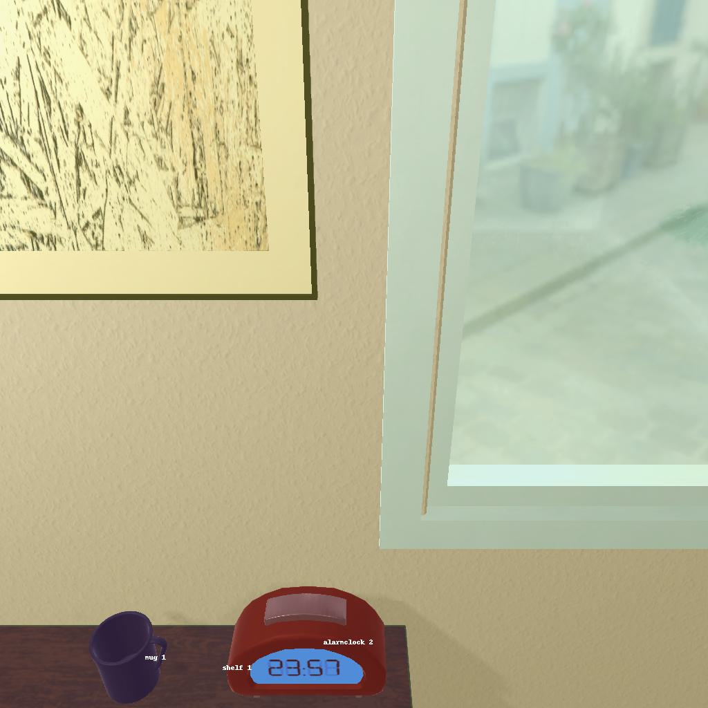
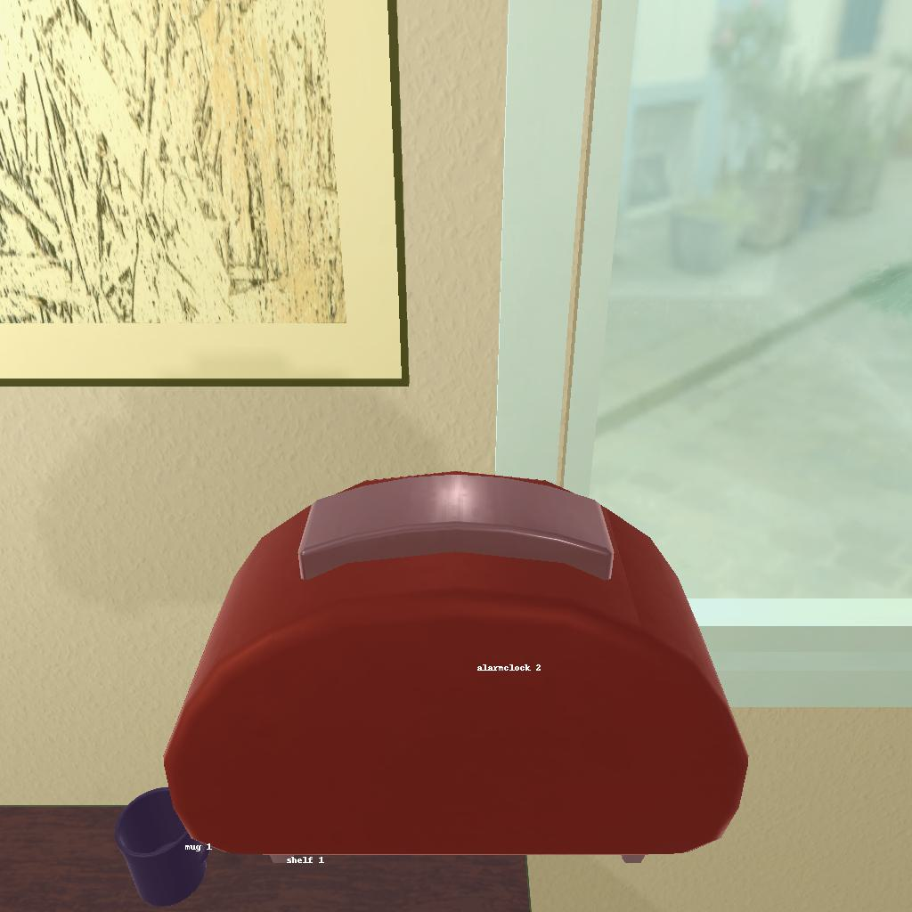

---------------------------------------------------------task: 1---------------------------------------------------------
--------------------------------------------------------------------------------------------------------------------------------------------------------------------
--------------------------------------------------------------------------------------------------------------------------------------------------------------------
Step:--------------------------------------------------------------------------11-------------------------------------------------------------------------------
----------------------------------------
VLM Prompt:
Image1:
Image2:
**Instruction**
1. Analyze the provided image to identify all visible household objects, focusing on those relevant to the task description "examine the alarmclock with the desklamp."
2. Use the analysis of the image and the task hint "The agent must find an object of the desired type, locate and turn on a light source with the desired object in-hand." to answer the question: what is the most reasonable action in the choices for the task description "examine the alarmclock with the desklamp"?
4. Decide and write the answer using the template: The answer is: (i): , where i is the real number. If there is no desired object in the image, search every place based on **Initial Observation** to find the object. And if no one is exactly correct, choose a similar answer.
**Initial Observation**
You are in the middle of a room. Looking quickly around you, you can see bed (1), dresser (1), drawer (1-10), garbagecan (1), shelf (1-7)
**Answer Choices**
(1): go to bed 1
(2): go to dresser 1
(3): go to drawer 1
(4): go to drawer 2
(5): go to drawer 3
(6): go to drawer 4
(7): go to drawer 5
(8): go to garbagecan 1
(9): go to drawer 6
(10): go to drawer 7
(11): go to drawer 8
(12): go to drawer 9
(13): go to drawer 10
(14): go to shelf 2
(15): go to shelf 3
(16): go to shelf 4
(17): go to shelf 5
(18): go to shelf 6
(19): go to shelf 7
(20): put alarmclock 2 in/on shelf 1
(21): examine alarmclock 2
(22): examine shelf 1
**Answer**
Let's think step by step by following the instructions.
----------------------------------------
----------------------------------------
Original Response:
Firstly, we need to identify all visible household objects in the provided image. In Image 1, we can see an alarm clock labeled "alarmclock 2" on what appears to be a shelf labeled "shelf 1" and a mug labeled "mug 1". There is also a painting on the wall, but it is not relevant to our task. There is no desklamp visible in the image.
Next, according to the task description "examine the alarmclock with the desklamp," we need to find a desklamp to examine the alarm clock properly. The task hint suggests that the agent must find an object of the desired type (in this case, a desklamp), locate and turn on a light source with the desired object in hand.
Since there is no desklamp visible in Image 1, and the initial observation does not mention a desklamp being in the room, we must search every place to find the desklamp.
The most reasonable action from the choices provided would be to go to different locations in the room where a desklamp could possibly be found, such as a shelf or a dresser. Since "shelf 1" is already visible and does not have a desklamp, we can rule out option (20) which is to put the alarmclock on shelf 1, and option (21) which is to examine the alarmclock without the desklamp, and option (22) which is to examine shelf 1.
The answer is: none of the provided choices directly allow for the examination of the alarm clock with the desklamp, but a similar action would be to go to the dresser or shelves where a desklamp might be placed. Since "dresser 1" is mentioned in the initial observation and is a common place for a desklamp, option (2): go to dresser 1 would be the most reasonable action to find a desklamp and then examine the alarm clock with it.
----------------------------------------
----------------------------------------
>>> Refine Original VLM Response and Get Pure Action: go to dresser 1 would be the most reasonable action to find a desklamp and then examine the alarm clock with it
----------------------------------------
-----------------------------------------------------------------
Running time: 17.65524911880493 seconds
Total Money: 0.5546300000000001
-----------------------------------------------------------------
-----------------------------------------------------------------
Text Observation:Nothing happens.
-----------------------------------------------------------------
UNSUCCEED